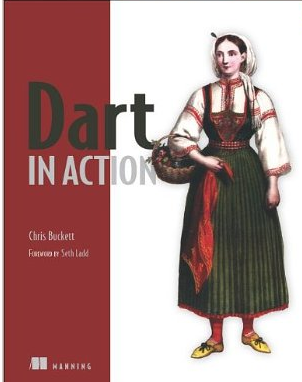

Your browser doesn't support the features required by impress.js, so you are presented with a simplified version of this presentation.
For the best experience please use the latest Chrome, Safari or Firefox browser.
May 2013
We build enterprise software.
Server-side
Thick client
? In the browser
/**
* @param person The person to greet
* @param greeting The greeting
* @return The personalized message
*/
public String greet(
Person person, String greeting) {
String result = greeting +" "+ person.name;
return result;
}
var greet = function(person, greeting) {
var result = greeting +" "+ person.name;
return result;
};
/**
* @param {foo.Person} person The person to greet
* @param {string} greeting The greeting
* @return {string} The personalized message
*/
var greet = function(person, greeting) {
// @type {string}
var result = greeting +" "+ person.name;
return result;
};
Unsurprising Class Based OOP
class Person {
var name;
}
class Customer extends Person {
var accountNo;
var address = new Address();
}
class Address {
var lines = new List(4);
var postcode;
}
Functions are objects
greet(person, greeting) {
var result = greeting + " " + person.name;
return result;
}
// store greet in another variable
var myFunc = greet;
var me = new Person()..name="Chris";
myFunc(me,"Hello");
Communicating intent through code
class Person {
String name;
}
class Customer extends Person {
int accountNo;
Address address = new Address();
}
String greet(Person person, String greeting) {
var result = greeting + " " + person.name;
return result;
}
Communicating intent through code, to tools and humans
// javascript
function greet(person, greeting) {
var result = greeting +" "+ person.name;
return result;
}
// dart
greet(person, greeting) {
var result = greeting +" "+ person.name;
return result;
}
Communicating intent through code, to humans and tools
// javascript
function greet(person, greeting) {
var result = greeting +" "+ person.name;
return result;
}
Use type annotations on the surface area of your code
// dart
String greet(Person person, String greeting) {
var result = greeting +" "+ person.name;
return result;
}
Dart language also has...
class Person implements SerializableString _iAmPrivate;doAsync().then((result) { ... } );this)new Map<String,Person>();port.send("Hello");instance.invoke('sayHello',[...]);library model_objects; import 'dart:json'; import 'package:logger/logger.dart'; part 'src/customer.dart'; part 'src/order.dart'; //... other code ...
import 'dart:html';
main() {
var msg = query('#msg');
var btn = new ButtonElement();
btn.text = 'Click me!';
btn.onClick.listen((e) => msg.text = 'Dart!');
document.body.children.add(btn);
}
import 'dart:io';
main() {
HttpServer.bind("127.0.0.1", 8888).then((svr) {
svr.listen((req) {
req.response.write("Hello World\n");
req.response.close();
});
print("Listening at http://127.0.0.1:8888/");
});
}
name: my_service
description: My App Service
version:
dependencies:
model_objects:
hosted:
url: http://my-package-server.com
config:
git: git://github.com/chrisbu/config.git
version: 1.2
dev_dependencies:
unittest: any
Built-in libraries help reduce fragmentation.
Teams can work together, sharing versioned packages.
Communicating intent through code, to humans and tools.
Communicating intent through code, to humans and tools.
Communicating intent through code, to humans and tools.
Communicating intent through code, to humans and tools.
Communicating intent through code, to humans and tools.
Communicating intent through code, to humans and tools.
Communicating intent through code, to humans and tools.
Communicating intent through code, to humans and tools.
Teams can work together, sharing versioned packages.Web Components
Model Driven Views
Shadow DOM
In all modern browsers
<span>{{ message }}</span>
<input bind-value='message'>
<script type='application/dart'>
import 'package:web_ui/web_ui.dart';
var message = 'Hello' + ' ' + 'Dart';
main() {}
</script>
<link rel="components" href="mdv_demo.html">
</head>
<body>
<x-mdv-component></x-mdv-component>
<script type='application/dart'>
import 'package:web_ui/web_ui.dart';
main() {}
</script>